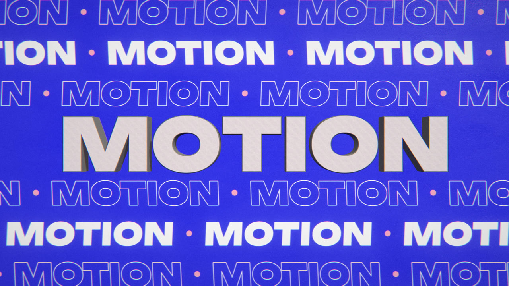
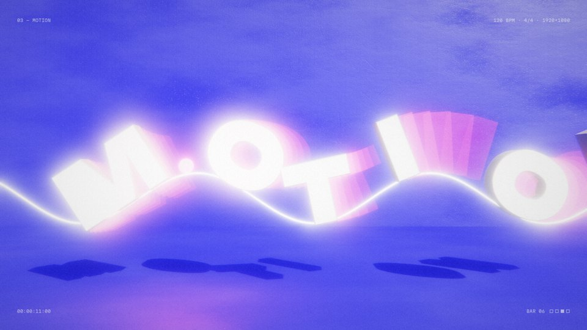
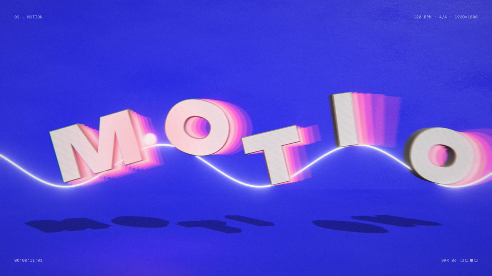
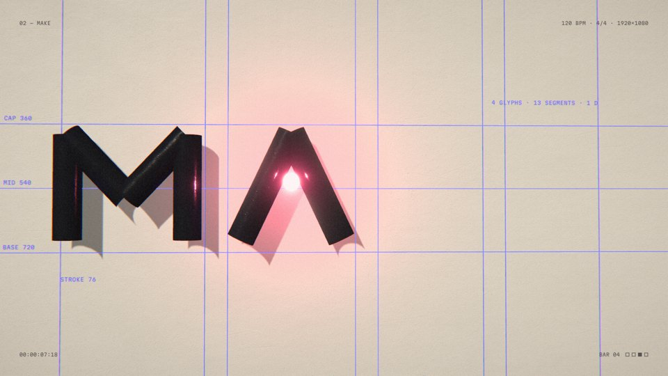
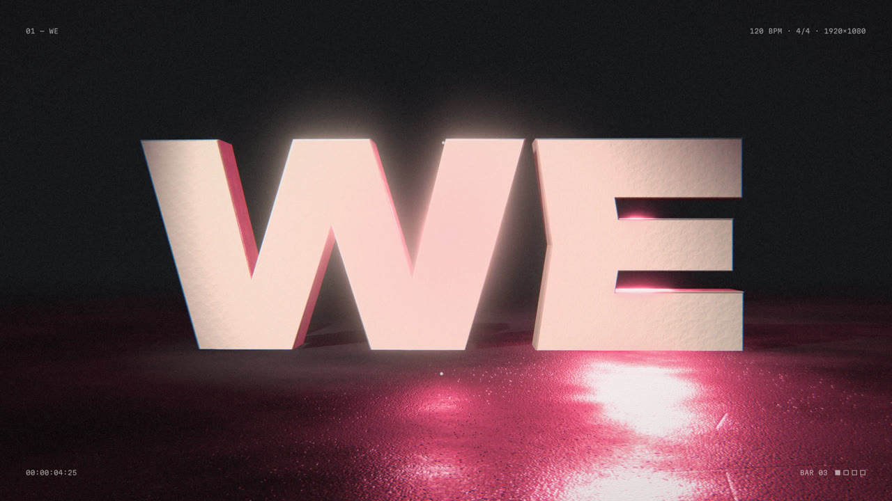
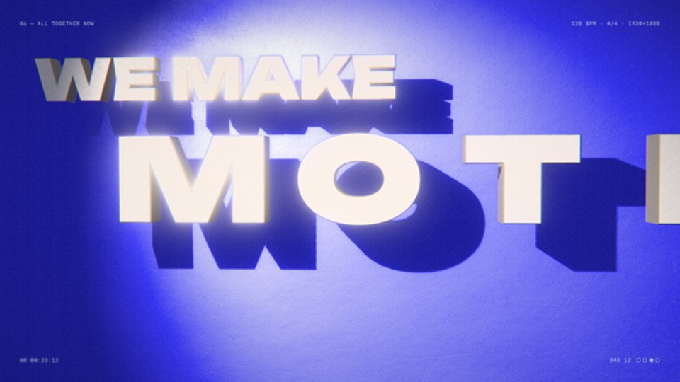
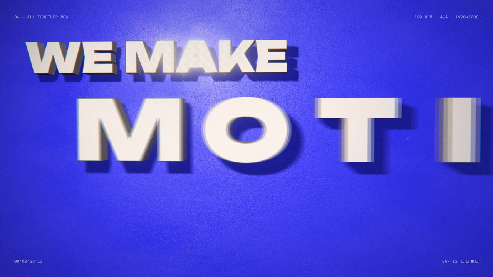
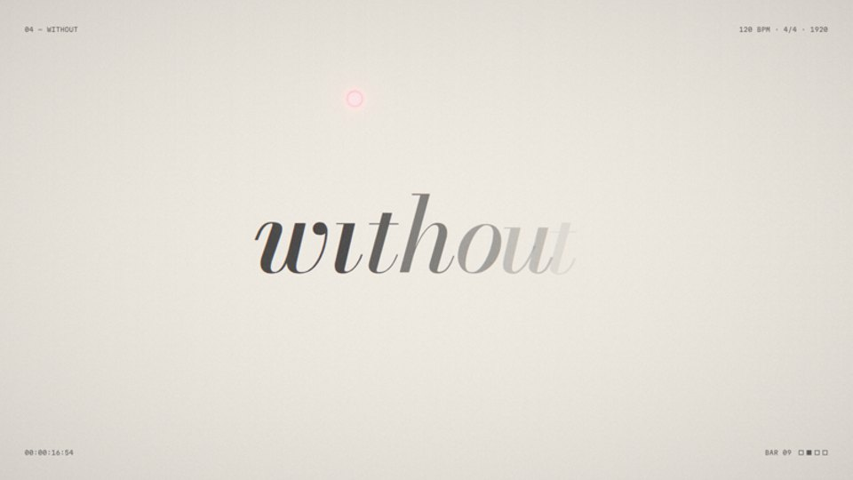
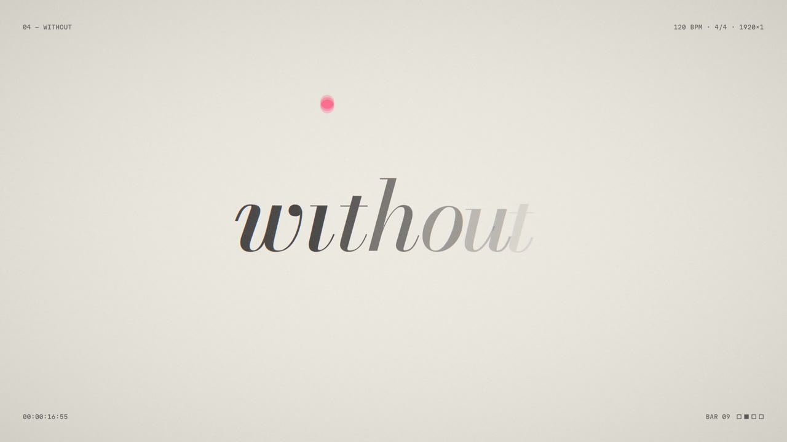
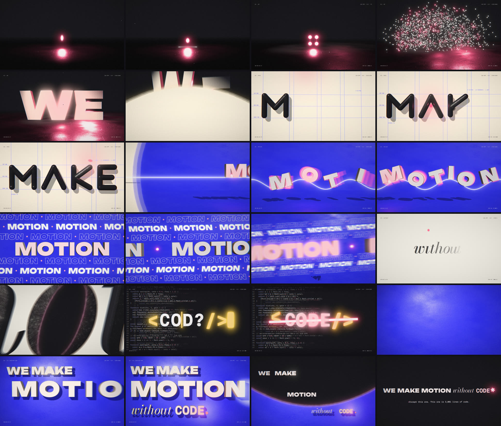

The follow-up brief: a 3D version with glowing accents, grit textures, and interesting mattes and masking.
I kept the cut, the cue sheet and the score, and swapped the renderer. The 3D edition calls the 2D film’s own choreography functions (the dot’s ballistics, the particle paths, the letters on the wave, the falling glyphs) and re-stages them in WebGL. Every hit still lands where it did, because it is the same maths.
What changes is material. Letters are extruded from the film’s fonts and lit. Accents are emissive and bloom. Surfaces carry procedural grit. And every transition is now a matte: a shape that decides where one world ends and the next begins, with a noise-bitten, glowing seam.

13.20 s: extruded MOTION in front of marquee rows placed at different depths.
| Moment | 3D technique |
|---|---|
| The drop | The dot is an emissive sphere carrying its own light. The gritty concrete floor only exists where it lands. |
| WE | {{PARTICLES}} glowing particles scatter in depth, flatten onto the letters’ face, and the word extrudes its thickness on a spring while the camera orbits. |
| → MAKE | Liquid wipe as a noise-edged matte with a glowing seam. |
| MAKE | Glossy ink capsule strokes drawn on like a pen, casting shadows on a paper wall. |
| → MOTION | Iris matte opening out of the dot. |
| MOTION | Letters ride a glowing ribbon with echo trails in depth; a dolly zoom stretches the marquee world during the build. |
| without | Bodoni surfacing out of fog. The o’s counter is a portal matte into CODE, and the camera flies through it. |
| CODE | Three parallax layers of source; butter-glow extruded brackets; letters tumbling toward the lens. |
| The claim | Words rise through clipping-plane mattes at their baselines; a spotlight sweeps the lockup across a gritty wall. |
| Fine print | One world rendered in two looks, joined by a noise-edged curtain; the full stop grows six glowing arms. |
A matte decides, per pixel, whether you see world A or world B. Mine come from two places: real 3D geometry rendered in white (the counter of the o, seen through the moving camera) or shapes drawn with the 2D film’s own helpers (the liquid wipe, the iris, the band). The mask is softened, then pushed around by fractal noise before it is thresholded. That gives a torn, gritty edge instead of a clean line. The same noise drives a glow along the seam, so every transition burns rather than cuts.
k = mask + (fbm(uv) − .5) · edgeNoise mm = smoothstep(.5 − w, .5 + w, k) col = mix(A, B, mm) + glow · exp(−((k − .5)/2.2w)²)
Only emissive things should glow: the dot, the particles, the ribbon, the brackets, the blade. The bloom threshold sits at 1.35 in linear light, above anything a lit surface reaches, so chalk letters stay crisp while accents flare. Bloom is a six-level dual-Kawase pyramid: cheap, smooth and wide.
The standard filmic curve (ACES) pushes saturated blue toward purple, which is wrong for a brand ultramarine. The grade uses a luminance-only curve instead: linear to 0.8, a soft shoulder above, and a gentle roll to white only for hot emissive cores. #2D2DF5 stays #2D2DF5.
Surfaces: procedural concrete and paper textures (value noise, specks, scratches) drive roughness and bump, so raking light finds texture. Film: luminance-weighted grain, sparse dust specks, a rare scratch and a sub-pixel gate weave, all applied after motion blur so they don’t average away. Signal: chromatic aberration that widens during the build, and glitch slices on the CODE hits.
Glyph outlines come straight from the font files via opentype.js, are unioned with a polygon clipper, then extruded with a bevel. Faces and sides take different materials.


Overcooked. The first 3D render worked end to end, and looked like a nightclub in fog. The bloom threshold (1.0) caught every lit surface, and ACES turned ultramarine lavender. The fix was a 1.35 threshold, a hue-preserving tone curve and lights at roughly half power. The same pass thinned the dust, which read as stars.


Seams in the letters. Unbounded’s static instance still stores letters as overlapping pieces. Bevelled one by one, the pieces show their edges across the face of W and E. Unioning each glyph’s contours before extruding gives one clean outline and one clean bevel.


The lockup re-lit. A hard spotlight from far left blew a hotspot into the wall, and its long shadows read as a second, dark copy of the words. Moving the key frontal and wide, and the wall closer, gives tight contact shadows and an even, gritty ultramarine.


A dot, not a ring. On light grounds, a hot emissive core rolls to white and vanishes into the paper, leaving a pink ring. Light scenes now use a solid, non-HDR flamingo for the dot; dark scenes keep the glow.
